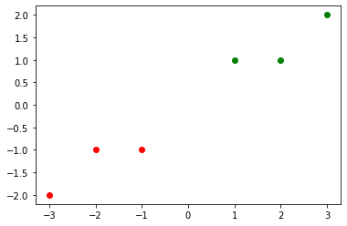
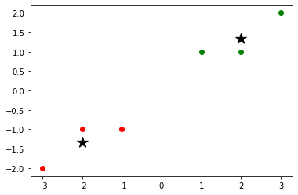

Implementando um classificador NearestCentroid
Implementando um classificador NearestCentroid
Importação das Bibliotecas
import numpy as np
import matplotlib.pyplot as plt
from math import sqrt
Esses são os dados de treino que vamos utilizar
Usando a biblioteca matplotlib, construimos um gráfico para melhor visualizar os dados
X_train = np.array([[-1, -1], [-2, -1], [-3, -2], [1, 1], [2, 1], [3, 2]])
y_train = np.array([1, 1, 1, 2, 2, 2])
plt.scatter(X_train[y_train==1, 0], X_train[y_train==1, 1], c='r')
plt.scatter(X_train[y_train==2, 0], X_train[y_train==2, 1], c='g')
<matplotlib.collections.PathCollection at 0x2b7adbb0550>

Aqui vamos encontrar os centroids por categorias
O método unique serve para agrupar as categorias, assim calculamos os centroid dos dados de cada categoria. Para cada linha, nós encontramos a média de x e y, armazendo o resultado em uma lista
def unique(list1):
unique_list = []
for x in list1:
if x not in unique_list:
unique_list.append(x)
return unique_list
centroids_ = np.array([])
for y in unique(y_train):
x = np.mean(X_train[y_train==y, 0], axis=0)
y = np.mean(X_train[y_train==y, 1], axis=0)
if centroids_.size == 0:
centroids_ = np.array([x, y])
else:
centroids_ = np.vstack((centroids_, [x, y]))
centroids_
array([[-2. , -1.33333333],
[ 2. , 1.33333333]])
Com os centroid encontrados, usamos o matplotlib para apresentar os dados
plt.scatter(X_train[y_train==1, 0], X_train[y_train==1, 1], c='r')
plt.scatter(X_train[y_train==2, 0], X_train[y_train==2, 1], c='g')
plt.scatter(centroids_[:,0], centroids_[:,1], s=200, marker='*', c='k')
<matplotlib.collections.PathCollection at 0x2b7adcc79d0>

O método euclidean_distance serve para calcular a distância euclidiâna entre dois vetores
def euclidean_distance(row1, row2):
distance = 0.0
for i in range(len(row1)):
distance += (row1[i] - row2[i])**2
return sqrt(distance)
euclidean_distance([-2, -1.33333333], [3,-1.33333333])
5.0
O método get_neighbor captura o vizinho mais próximo a um vetor
def get_neighbor(X):
distances = list()
for x_train in [[-2,-1.33333333],[2,1.33333333]]:
dist = euclidean_distance(X, x_train)
distances.append((x_train, dist))
distances.sort(key=lambda tup: tup[1])
return distances[0][0]
get_neighbor([0, -1])
[-2, -1.33333333]
Aqui nós criamos nossa implementação do NearestCentroid, com os métodos fit e predict
class NearestCentroidScratch():
def __init__(self, metric='eucledian'):
self.metric = metric
self.centroids_ = np.array([])
def fit(self, X_train, y_train):
for label in unique(y_train):
x = np.mean(X_train[y_train==label, 0], axis=0)
y = np.mean(X_train[y_train==label, 1], axis=0)
if self.centroids_.size == 0:
self.centroids_ = np.array([x, y, label])
else:
self.centroids_ = np.vstack((self.centroids_, [x, y, label]))
def predict(self, X):
labels_predic = list()
for x_rox in X:
distances = list()
for centroid in self.centroids_:
dist = euclidean_distance(x_rox, centroid[:2])
distances.append((centroid[2], dist))
distances.sort(key=lambda tup: tup[1])
labels_predic.append(distances[0][0])
return labels_predic
def unique(cls, list1):
unique_list = []
for x in list1:
if x not in unique_list:
unique_list.append(x)
return unique_list
def euclidean_distance(row1, row2):
distance = 0.0
for i in range(len(row1)):
distance += (row1[i] - row2[i])**2
return sqrt(distance)
Utilizando a classe criada anteriomente, faremos o treinamento do modelo. Basicamente vai armazenar os centroids de cada categoria. O método predict vai prever a categoria de cada vetor da lista, buscando por seu vizinho mais próximo baseado na menor distância euclidiâna.
model = NearestCentroidScratch()
model.fit(X_train, y_train)
model.centroids_
X_test = np.array([[-1, -2], [0, -1], [-3, -3], [2, 2], [1, 2]])
y_test = np.array([1, 1, 1, 2, 2])
model.predict(X_test)
[1.0, 1.0, 1.0, 2.0, 2.0]